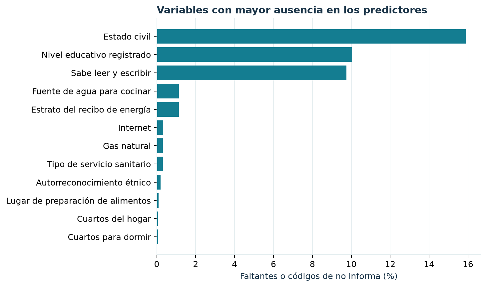

Capítulo 3 Calidad de los datos
3.1 Comprobaciones antes de analizar
Se verificaron tres puntos que cambian el significado de cualquier resultado: la regla de la etiqueta, la unicidad de las claves y el enlace entre tablas. La regla deja 80 respuestas sin clasificación entre las 136.114 personas que declararon el problema de salud. Las 136.034 personas restantes tienen clave única y todas encontraron un hogar y una vivienda con las claves exigidas.
Esto resuelve un riesgo frecuente al combinar archivos censales: una unión de muchos a muchos podría inflar recuentos y alterar tasas sin generar un error visible. En este caso se exigió explícitamente una unión de muchos individuos hacia un único hogar y una única vivienda.
3.2 Faltantes y códigos de no respuesta
La figura 3.1 muestra las doce variables de entrada con mayor proporción de ausencia después de sumar faltantes literales y códigos especiales de «no informa» o «no aplica» reconocidos por el pipeline.

Figure 3.1: Ausencia observada en las variables del modelo. Porcentaje sobre 136.034 personas de la cohorte; combina valores vacíos y códigos centinela definidos en el esquema.
| Variable | Contenido | Vacíos literales | Vacíos + códigos | Porcentaje |
|---|---|---|---|---|
| P_EST_CIVIL | Estado civil | 21.377 | 21.597 | 15,9 % |
| P_NIVEL_ANOSR | Nivel educativo registrado | 12.977 | 13.666 | 10,0 % |
| P_ALFABETA | Sabe leer y escribir | 12.977 | 13.267 | 9,8 % |
| H_AGUA_COCIN | Fuente de agua para cocinar | 1.144 | 1.559 | 1,1 % |
| VA1_ESTRATO | Estrato del recibo de energía | 1.398 | 1.554 | 1,1 % |
| VF_INTERNET | Internet | 0 | 447 | 0,3 % |
| VD_GAS | Gas natural | 0 | 428 | 0,3 % |
| V_TIPO_SERSA | Tipo de servicio sanitario | 0 | 424 | 0,3 % |
| PA1_GRP_ETNIC | Autorreconocimiento étnico | 0 | 267 | 0,2 % |
| H_DONDE_PREPALIM | Lugar de preparación de alimentos | 0 | 130 | 0,1 % |
El estado civil tiene 15,9 % de ausencia; educación, 10,0 %; y alfabetismo, 9,8 %. Parte de los vacíos literales en estas preguntas coincide con edades para las que el cuestionario no aplica. Por eso sería incorrecto tratarlos automáticamente como pérdida aleatoria o rellenarlos con una categoría sustantiva inventada. El modelo conserva la ausencia como señal categórica o la imputa, según el tipo de variable, dentro de cada partición de entrenamiento.
En vivienda y hogar, la fuente de agua para cocinar y el estrato del recibo de energía se sitúan alrededor de 1,1 % de ausencia combinada. Una ausencia pequeña tampoco garantiza ausencia de sesgo: puede concentrarse en situaciones específicas. El perfil completo de 26 campos se conserva en data/calidad_variables.csv dentro de las fuentes del Bookdown y se deriva del mismo universo que el experimento.
3.3 Controles que siguen siendo necesarios
La consistencia de claves y la baja ausencia de muchos campos no prueban que las respuestas sean exactas. El CNPV recoge declaraciones; pueden existir errores de recuerdo, interpretación o registro que estos archivos no permiten verificar. La variable objetivo simplifica una experiencia de atención más amplia a una sola opción principal. Por ello, la discusión de resultados se limita a asociaciones observadas y a una etiqueta operativa.